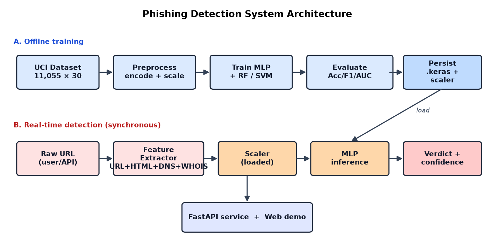
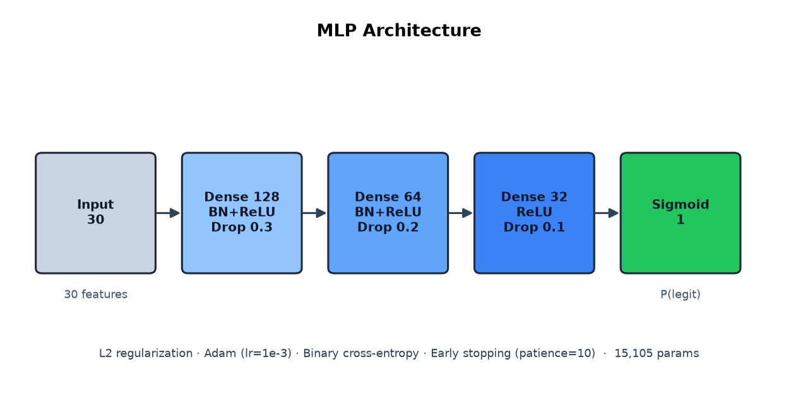
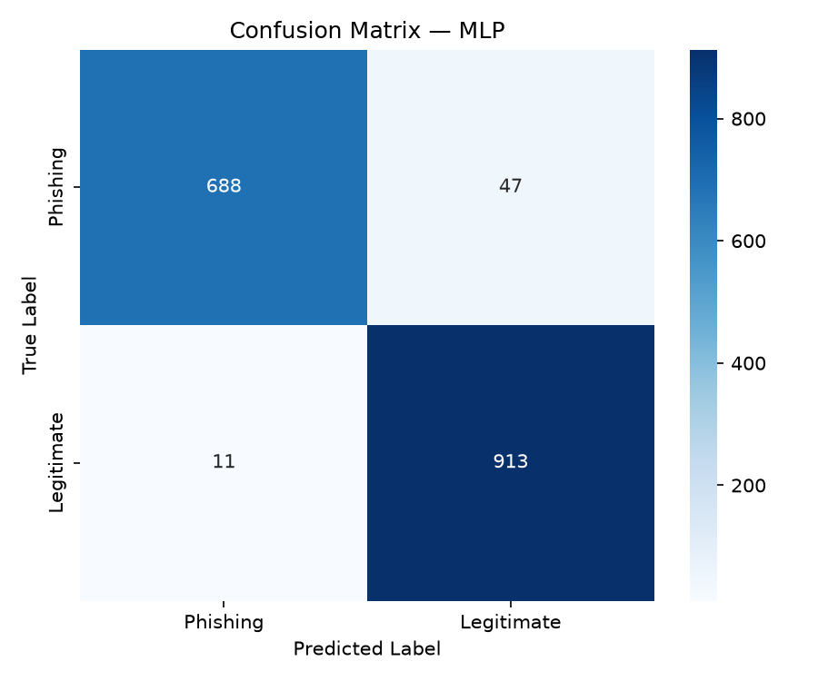
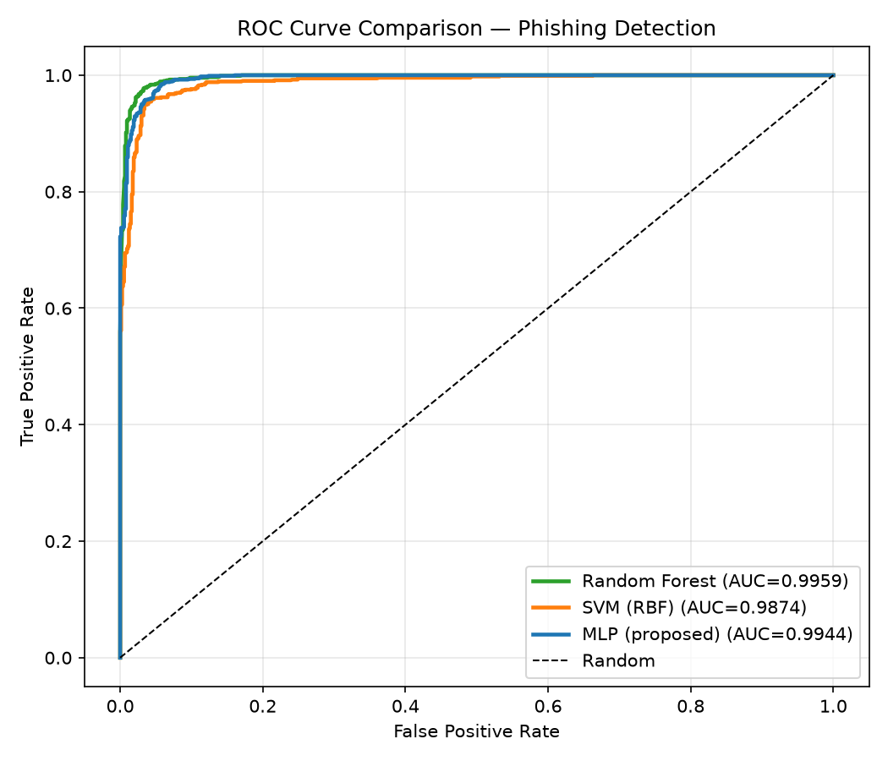

De la clasificación offline a la detección en tiempo real
Gabriel Fallas · Valeria Chinchilla
Universidad de Costa Rica — 1 de julio de 2026
ataques de phishing en 2024 (APWG) — récord histórico
vida útil típica de un sitio phishing antes de ser bloqueado
en pérdidas por BEC solo en EE. UU.
→ Machine Learning: aprende patrones de los datos en vez de codificar reglas.
| Trabajo | Técnica | Datos | Acc. | Tiempo real |
|---|---|---|---|---|
| Mohammad '12 | Feature eng. | 2 500 | 84% | No |
| Mohammad '14 | SSNN | 11 055 | ~97% | No |
| Sahingoz '19 | RF + NLP | 73 575 | 97.3% | No |
| Vrbančič '20 | XGBoost | 88 647 | ~97.6% | No |
| Este trabajo | MLP+RF+SVM | 11 055 | 97.2% | Sí |
Todos tratan el phishing como un experimento offline. Ninguno expone un servicio que clasifique una URL nueva bajo demanda. Esa es nuestra contribución.
having_IP_Address · URL_Length · SSLfinal_State ·
URL_of_Anchor · age_of_domain · DNSRecord
El valor 0 (sospechoso) aporta información que un flag binario perdería → no se binariza.

Una rama offline entrena y persiste; una rama en tiempo real reutiliza el modelo para clasificar URLs nuevas.

128→64→32→1 · BatchNorm + Dropout + L2 + Early Stopping · 15 105 parámetros
@, subdominios (tldextract)Dependen de servicios descontinuados:
web_traffic → Alexa (cerrado 2022)Page_Rank → Toolbar PageRank (2016)Links_pointing, Google_Index, Statistical_reportCada feature reporta su procedencia (measured / default).
POST /predict/featuresClasifica un vector de 30 valores.
POST /predict/urlExtrae features de una URL cruda y devuelve veredicto, confianza y procedencia.
GET /Demo web interactiva para probar cualquier URL en vivo.
⏱️ Inferencia sub-segundo · 🎬 Demo en vivo: uvicorn src.api_phishing:app → localhost:8000
| Modelo | Accuracy | Precision | Recall | F1 | AUC |
|---|---|---|---|---|---|
| Random Forest | 0.972 | 0.969 | 0.981 | 0.975 | 0.996 |
| SVM (RBF) | 0.946 | 0.935 | 0.971 | 0.953 | 0.987 |
| MLP (propuesto) | 0.965 | 0.951 | 0.988 | 0.969 | 0.994 |
El MLP logra el recall más alto (98.8%) — la métrica decisiva en seguridad: un falso negativo es un sitio phishing que llega al usuario.


MLP y Random Forest prácticamente indistinguibles; entrenamiento estable sin sobreajuste.
Construimos un sistema end-to-end: un MLP regularizado con 96.5% accuracy y 98.8% recall, más un servicio de detección en tiempo real (extractor + API + demo) — el componente desplegable ausente en los trabajos fundacionales.
¡Gracias!
Preguntas · github.com/GabrielFallas/PF3325-Phishing-Websites